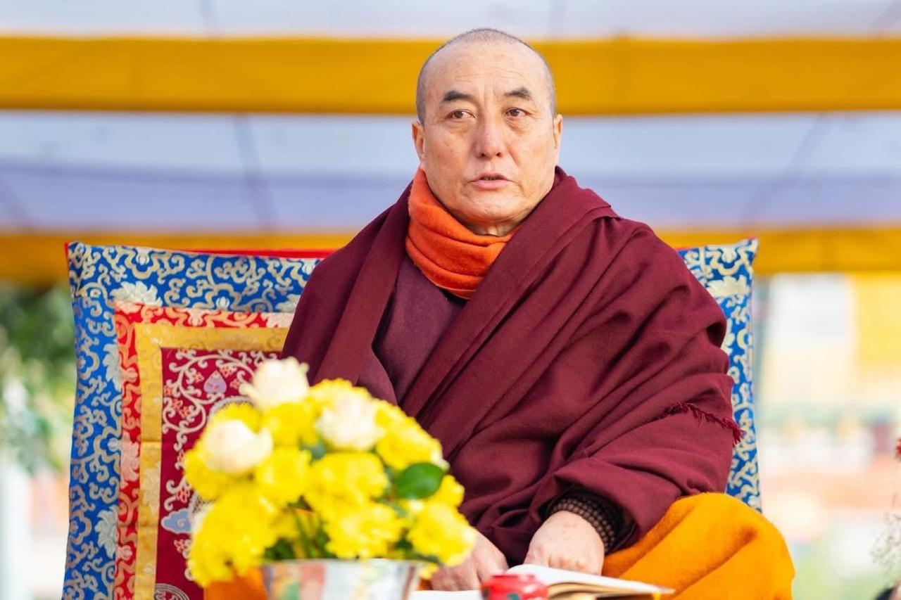

༄༅།། གསང་ཆེན་མཐོང་གྲོལ་གླིང་དགོན་པ།།
Sangchen Thongdrol Ling
A sacred place of liberation through seeing (Thongdrol)
A historic Buddhist monastery situated in Ging, Darjeeling.
A Nyingma monastery affiliated with Pemayangtse, with recorded history dating to the early nineteenth century.
Upcoming Event
Saga Dawa Celebration
31st May 2026
Dear Dharma friends and devotees, you are warmly invited to the sacred Saga Dawa Celebration at Sangchen Thongdroling Monastery, Ging, Darjeeling, West Bengal.
His Holiness the 10th Kyabje Gonjang Rinpoche has graciously accepted the humble request to preside over this auspicious occasion and will bestow long life prayers and blessings upon all devotees.
RSVP: Ven. Yap Lopen Yeshey Dorjee Bhutia and Committee Members


His Holiness the 10th Kyabje Gonjang Rinpoche
Saga Dawa Update
History of Gonjang Monastery
More than two hundred years ago, during the lifetime of the Sixth Gonjang Incarnation, Rigzin Padma Chöphél, Gonjang Monastery was established in the Tsang region of Tibet. Through successive incarnations, the precious Buddha Dharma was preserved, protected, and propagated continuously.
Later, in the year 1956, when the time of Tibet's tragic suffering ripened under the cruelty and oppression of evil forces, the Ninth Gonjang Rinpoche, Ngawang Yönten Gyatso, also passed peacefully into parinirvana. Following this, his disciples and followers searched for his reincarnation. According to the prophecy and recognition given by the great master of mantra and meditation, Kyabjé Dudjom Jigdral Yeshe Dorje, the representative of Guru Padmasambhava, the present Gonjang Tulku Rinpoche was recognized in the hidden sacred land of Sikkim, near the northern side of Guru Rinpoche's sacred cave in the eastern hidden valley.
This recognition was later unanimously confirmed by His Holiness the 14th Dalai Lama and both His Holinesses the Karmapas. Thereafter, the late Rinpoche's attendant Matha Drol Dorje and the disciples took responsibility for his care and education.
The present Gonjang Rinpoche received the oral transmission of the Kangyur from Kyabjé Dudjom Rinpoche, the empowerments and teachings of the Nyingma Kama tradition from Kyabjé Dilgo Khyentse Rinpoche, and the empowerments, transmissions, and instructions of the Northern Treasure (Jangter) tradition, including the three sections of practice cycles and Dzogchen Gongpa Zangthal, from Kyabjé Taklung Tsetrul Rinpoche.
In particular, from the greatly compassionate Kyabjé Dodrupchen Rinpoche, he received extensive teachings beginning from reading and writing, as well as empowerments and transmissions of the Kama and Terma traditions, the Four Cycles of Dzogchen Nyingthig, Jigling Sungbum, Nyingthig Root Texts, and the Six Volumes of the Rainbow Body teachings. Under the guidance of Dodrupchen Rinpoche, he completed a three-year retreat at Pema Öling retreat center, mainly practicing Longchen Nyingthig and engaging deeply in the meditation and realization of the luminous Great Perfection (Dzogchen).
In 1981, when His Holiness the Dalai Lama visited Gangtok, Sikkim, he bestowed blessings upon the land and laid the foundation for the construction of the new main temple of Gonjang Monastery, called Orgyen Do-Ngag Chökhor Ling. Under the principal responsibility of Matha Drol Dorje, the monastery's main temple and the sacred statues of the lineage masters, abbots, teachers, and the twenty-five disciples were successfully completed.
Likewise, in Dorjeling, under the leadership of the present Tulku, the traditions of the great Vidyadharas have been maintained without decline. Around forty monks and practitioners continue to uphold pure discipline and harmony while carrying out regular monthly tenth-day Guru Rinpoche practices, the four great Buddhist festivals blessed by Buddha Shakyamuni, memorial ceremonies for great masters, and important rituals from the Northern Treasure tradition.
Among the major practices continuously performed are the outer practice of Avalokiteshvara, "Liberation of All Beings"; the inner Guru Vidyadhara practice; the secret wrathful practice; and the Eight Herukas wrathful rituals and other sacred ceremonies. These traditions continue unbroken to the present day.
Especially, beginning from the 22nd day of the ninth Tibetan lunar month, a ten-day grand Vajrakilaya Drupchen is held annually. On the 29th day the ritual torma offering is performed, on the 30th day the fire puja and concluding activities are conducted, and on the 1st day of the next month the extensive Jangter Sang offering is performed. Through these vast spiritual activities, the monastery continues to uphold and spread the precious teachings of the Buddha with great dedication and compassion.
Ven. Yap Lopen Yeshey Dorjee Bhutia
This website serves as an ongoing archival effort—documenting the history, traditions, and living practice of Sangchen Thongdrol Ling.